Телесно-ориентированная терапия — это направление психотерапии, в котором работа с телом становится ключевым инструментом для решения психологических проблем. Сегодня обучение по телесно-ориентированной психотерапии доступно в различных форматах, включая дистанционные курсы, программы профессиональной переподготовки и личную терапию. Мы составили рейтинг образовательных программ, где слушатели проходят обучение телесно-ориентированной терапии с возможностью совмещать учебу с практической деятельностью. Курсы подойдут как для начинающих, так и для практических психологов, желающих освоить методы телесной терапии и получить диплом установленного образца.
Информация обновлена:
ТОП онлайн-курсов обучения по телесно-ориентированной терапии
- 🏆 Психосоматика и телесно-ориентированная терапия – МИП (по промокоду kursy скидка 🎁 10%)
- 🏆 Техники и навыки телесно-ориентированной терапии – МИП (по промокоду kursy скидка 🎁 10%)
- 🏆 Психолог-консультант с дополнительной специализацией в области психосоматики и телесной психотерапии – НАДПО (по промокоду onlinekursy действует скидка 🎁 5%)
- Телесно-ориентированная терапия в психологическом консультировании – НАДПО (по промокоду onlinekursy действует скидка 🎁 5%)
- Психосоматика и телесная психотерапия – НАДПО (по промокоду onlinekursy действует скидка 🎁 5%)
- Телесно-ориентированная психотерапия – МШПП
- Психосоматика и телесная психотерапия: теория, практика – МИПО по промокоду onlinekursy действует скидка 🎁 10%
- Психосоматика и телесно-ориентированная терапия – MITM
- Телесно-ориентированная терапия в психологическом консультировании – ИПО
- Телесно-ориентированная терапия в психологическом консультировании – НЦРДО (по промокоду onlinekursy действует скидка 🎁 5%)
- Телесно-ориентированная терапия в психологическом консультировании – ЦАППКК (по промокоду onlinekursy действует скидка 🎁 5%)
- Телесно-ориентированная терапия и работа с психосоматикой – ИППСС
- Телесно-ориентированная терапия – Учебный центр АПОК
- Телесно-ориентированная терапия – Учебный центр ЭКОДПО
- Телесный терапевт – Учебный центр НЦПО
- Психосоматика и телесная психотерапия: теория, практика – НАДПО (по промокоду onlinekursy действует скидка 🎁 5%)
- Телесно-ориентированная психотерапия – НАДПО (по промокоду onlinekursy действует скидка 🎁 5%)
- Психосоматика и телесная психотерапия: теория, практика – НАДПО (по промокоду onlinekursy действует скидка 🎁 5%)
- Телесно-ориентированная психотерапия – НЦРДО (по промокоду onlinekursy действует скидка 🎁 5%)
- Методы телесно-ориентированной психотерапии телесные в работе психолога – Учебный центр НЦПО
Отличительные преимущества каждой дистанционной программы обучения по телесно-ориентированной терапии
| № | Курс и школа | Преимущества | Ссылка |
|---|---|---|---|
| 🥇 | Психосоматика и телесно-ориентированная терапия – МИП | Глубокая практика, преподаватели с 25-летним стажем, диплом котируется за рубежом, участие в супервизиях и профессиональном сообществе. | Перейти |
| 🥈 | Техники и навыки телесно-ориентированной терапии – МИП | Фокус на прикладных навыках, признание диплома, насыщенная 4-месячная программа, обучение по методикам Райха и Лоуэна. | Перейти |
| 🥉 | Психолог-консультант с дополнительной специализацией в области психосоматики – НАДПО | 1510 часов обучения, 714 часов практики, карьерная поддержка, доступ к платформе с реальными клиентами, диплом ФИС ФРДО. | Перейти |
| 4 | Телесно-ориентированная терапия в психологическом консультировании – НАДПО | Доступная цена, 530+ часов, ФГОС-программа, 30% времени – практика, поддержка HR. | Перейти |
| 5 | Психосоматика и телесная психотерапия – НАДПО | 780 часов, работа в тройках, профессиональные супервизии, более 400 часов практики. | Перейти |
| 6 | Телесно-ориентированная психотерапия – МШПП | 48 преподавателей, углублённая практика, диплом для международного трудоустройства. | Перейти |
| 7 | Психосоматика и телесная психотерапия: теория, практика – Московский Институт Профессионального Образования | Доступ отовсюду, карьерный центр, налоговый вычет, диплом с регистрацией в ФРДО. | Перейти |
| 8 | Психосоматика и телесно-ориентированная терапия – MITM | 12 месяцев, диплом гос. образца, личная терапия в процессе, обучение без отрыва от работы. | Перейти |
| 9 | Телесно-ориентированная терапия в психологическом консультировании – ИПО | Гибкий график, карьерная поддержка, менторы, диплом о переподготовке, доступные цены. | Перейти |
| 10 | Телесно-ориентированная терапия в психологическом консультировании – НЦРДО | 650 часов, HR-консультации, участие в группах и индивидуальных сессиях, онлайн-поддержка. | Перейти |
| 11 | Телесно-ориентированная терапия в психологическом консультировании – ЦАППКК | 36 месяцев рассрочки, диплом ФРДО, доступ 24/7, ежедневная техподдержка. | Перейти |
| 12 | Телесно-ориентированная терапия и работа с психосоматикой – ИППСС | 230 часов за 2 месяца, доступ к 10 000+ вебинарам, официальное удостоверение. | Перейти |
| 13 | Телесно-ориентированная терапия – АПОК | Быстрое обучение (3 недели), гослицензия, дистанционный доступ 24/7, доставка документов. | Перейти |
| 14 | Телесно-ориентированная терапия – ЭКОДПО | Минимальные сроки (1,5 недели), пересдачи бесплатны, персонализированная программа. | Перейти |
| 15 | Телесный терапевт – НЦПО | Диплом бессрочный, опытные преподаватели, доступ к платформе навсегда, юридическая защита. | Перейти |
| 16 | Психосоматика и телесная психотерапия: теория, практика – НАДПО | 240 часов практики, навыки онлайн-консультирования, ФГОС, кешбэк, индивидуальный темп. | Перейти |
| 17 | Телесно-ориентированная психотерапия – НАДПО | 144 часа, ТОП-3 по соотношению цена/качество, методики биосинтеза и структурной интеграции. | Перейти |
| 18 | Психосоматика и телесная психотерапия: теория, практика – НАДПО | Техники телесной осознанности, расслабления, удостоверение с ФРДО, налогооблагаемый вычет. | Перейти |
| 19 | Телесно-ориентированная психотерапия – НЦРДО | 144 часа за 2 месяца, участие в проекте Сколково, доступ ко всем обновлениям навсегда. | Перейти |
| 20 | Методы телесно-ориентированной психотерапии телесные в работе психолога – НЦПО | Минимальная стоимость, удостоверение за 1 день, дистанционное обучение с поддержкой. | Перейти |
1. 🏆 Психосоматика и телесно-ориентированная терапия – Московский институт психологии
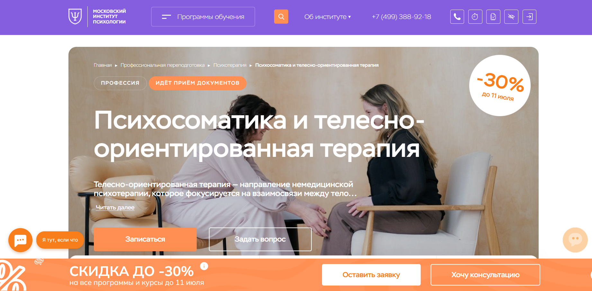- ✅ Официальный сайт: mip.institute
- 💸 Цена обучения: от 150 000 ₽ до 232 000 ₽ (скидка 30%).
- 💳 Рассрочка: доступна, платеж от 12 500 ₽ в месяц.
- 📚 Формат: дистанционные лекции, тесты, вебинары, супервизии, демонстрационные сессии, проекты с обратной связью.
- ⏳ Продолжительность: 8 или 14 месяцев (в зависимости от тарифа).
- 📜 Документ: диплом о профессиональной переподготовке и удостоверение о повышении квалификации.
- 📝 Трудоустройство: поддержка Центра практики и карьеры, возможность начать частную практику.
- 🔷 Для кого подходит курс: для новичков, практикующих психологов и тех, кто хочет получить психологическое образование для себя.
Особенности:
Программа создана для освоения телесно-ориентированной психотерапии в дистанционном формате. Подходит тем, кто хочет работать с клиентами через тело, управлять стрессом и помогать в решении психосоматических проблем. Студенты изучают методы телесной терапии, практикуют на кейсах, получают обратную связь от преподавателей с опытом до 25 лет. Обучение проходит в онлайн-платформе с постоянной поддержкой, супервизиями и доступом к профессиональному сообществу. Курсы разработаны с учетом требований к практическому психологу, включают групповую терапию и индивидуальное консультирование. Диплом института котируется как в России, так и за рубежом благодаря лицензии и партнерству с ОППЛ.
Чему учатся студенты:
- Анализировать связь между эмоциями и телесными ощущениями
- Работать с психосоматическими симптомами
- Применять методы телесно-ориентированной терапии в практике
- Проводить телесные техники для снижения тревожности и напряжения
- Помогать клиентам достигать эмоционального баланса
Преподаватели:
- Додонова Ирина Викторовна — практикующий психолог, автор книг, специалист по транзактному анализу, EMDR и коучингу
- Валуев Олег Сергеевич — психолог экзистенциального направления, научный исследователь, автор 150+ статей
Преимущества:
- Гибкий график и удобный формат для совмещения с работой
- Поддержка кураторов и преподавателей на каждом этапе
- Участие в супервизиях, интервизиях и мастермайндах
- Лицензированные дипломы с международным приложением
- Доступ к вебинарам и мероприятиям института
- Форматы обучения на выбор — «Лайт» и «Стандарт»
- Возможность присоединиться к крупнейшему профессиональному сообществу психологов
- Скидка 30% при раннем бронировании
Отзывы учеников:
Слушатели отмечают доступность дистанционного формата, сильную методическую базу, практическую направленность и вовлеченность преподавателей. Выделяют удобную платформу, насыщенные вебинары и поддержку куратора на протяжении всего обучения.
Перейти на официальный сайт курса2. 🏆 Техники и навыки телесно-ориентированной терапии – Московский институт психологии
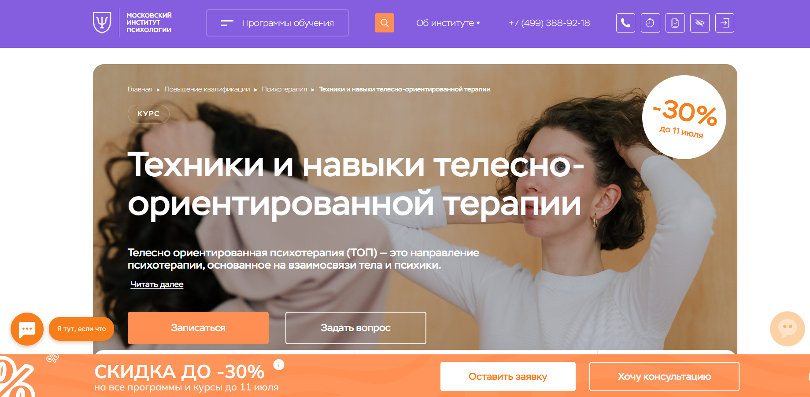
- ✅ Официальный сайт: mip.institute
- 💸 Цена обучения: 104 528 ₽ (со скидкой 30%, старая цена – 149 000 ₽)
- 💳 Рассрочка: возможна от 8 711 ₽/мес., уточняется при записи
- 📚 Формат: дистанционный формат: лекции, вебинары, домашние задания, супервизии и тестирование на образовательной платформе
- ⏳ Продолжительность: 4 месяца (240 академических часов)
- 📜 Документ: удостоверение установленного образца с международным приложением
- 📝 Трудоустройство: подтверждение квалификации, официальное трудоустройство, признание диплома
- 🔷 Для кого подходит курс: начинающим психологам, практикам без диплома, людям, интересующимся личной терапией и телесной терапией
Особенности:
Программа предлагает профессиональную переподготовку в области телесно-ориентированной терапии с применением дистанционного обучения. Студенты осваивают навыки консультирования через работу с телом, что особенно актуально при решении психосоматических проблем. Все занятия проходят онлайн, позволяя совмещать обучение с работой. Участники получают доступ к профессиональному сообществу, обратную связь от преподавателей, а также практику на реальных кейсах. Учебный процесс построен на современных подходах, включая методы В. Райха, А. Лоуэна и других ключевых фигур телесной терапии. Курс разработан для тех, кто хочет получить диплом, работать официально и понимать взаимодействие психики и тела. Образование ориентировано на практику и закрепляется через задания и супервизии.
Чему учатся студенты:
- Применять методы телесно-ориентированной терапии в работе с клиентами
- Понимать теорию и практику телесной терапии
- Работать с эмоциями и телесными зажимами
- Диагностировать психологические проблемы с точки зрения телесного подхода
- Прорабатывать психосоматические симптомы
- Владеть техниками саморегуляции и расслабления
- Проводить групповые и индивидуальные сессии
Преподаватели:
- Стибунов Алексей Васильевич — клинический психолог, первый проректор института, преподаватель психологии
- Овчинникова Татьяна Владимировна — гештальт-терапевт, телесно-ориентированный терапевт, амбассадор Российского общества «Знание»
Преимущества:
- Гибкий график обучения через дистанционную платформу
- Доступ к библиотеке, вебинарам и поддержке преподавателей
- Международный диплом, признанный в профессиональной среде
- Практическая подготовка через разбор клиентских случаев
- Подходит как для новичков, так и действующих специалистов
- Возможность совмещать обучение с работой и личной жизнью
- Освоение актуальных телесных техник для практического применения
Отзывы учеников:
Студенты хвалят курс за насыщенную программу, профессиональный подход преподавателей и практическую направленность. Отмечают, что занятия понятны, а формат обучения — удобный и доступный. Многие подчеркнули ценность обратной связи и практики на реальных кейсах.
Перейти на официальный сайт курса3. 🏆 Психолог-консультант с дополнительной специализацией в области психосоматики и телесной психотерапии – Национальная академия дополнительного профессионального образования (АНО ДПО НАДПО)
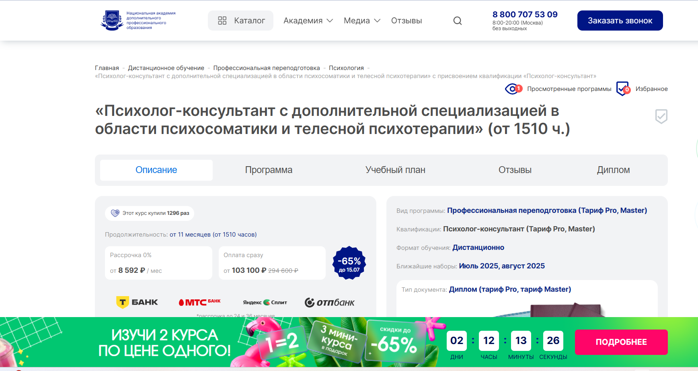- ✅ Официальный сайт: nadpo.ru
- 💸 Цена: от 103 100 ₽ (со скидкой, полная стоимость — 294 600 ₽)
- 💳 Рассрочка: от 8 592 ₽/мес, возможна на срок до 36 месяцев без процентов
- 📚 Формат: дистанционный формат, включает видеолекции, практические задания, киноклубы, тесты, супервизии, групповые воркшопы и консультации
- ⏳ Продолжительность: от 11 месяцев (1510 часов), включая 714 часов практики
- 📜 Документ: диплом о профессиональной переподготовке установленного образца с внесением в реестр ФИС ФРДО
- 📝 Трудоустройство: помощь в составлении резюме, доступ к онлайн-платформе с реальными клиентами, поддержка HR-специалистов
- 🔷 Для кого подходит курс: для тех, кто хочет освоить профессию с нуля, получить дополнительную квалификацию или глубже понять психосоматические процессы в теле
Особенности:
Курс разработан с упором на телесно-ориентированную психотерапию и практическое применение знаний. Студенты обучаются в дистанционном формате, получая доступ к лучшим материалам и обратной связи от практиков. Формат обучения позволяет совмещать учебу с работой. Каждый слушатель проходит через реальные кейсы, консультации, супервизии и освоение методов телесной терапии. Доступ к платформе сохраняется навсегда, а диплом подтверждает квалификацию по всей России. Выпускникам гарантирован старт в профессии благодаря поддержке центра карьеры и готовой базе клиентов.
Чему учатся студенты:
- Основы психологического консультирования и диагностики
- Методы телесно-ориентированной психотерапии
- Работа с психосоматическими расстройствами у взрослых и детей
- Психофизиологические и психодинамические подходы
- Техники дыхательной саморегуляции и релаксации
- Практика с телесными образами и метафорическими картами
- Навыки индивидуального и группового консультирования
- Интернет-консультирование и продвижение личного бренда
Преподаватели:
- Зотова Мария Юрьевна — магистр психоаналитического бизнес-консультирования, автор курса, эксперт в подготовке практикующих психологов
- Тарасов Сергей Васильевич — кандидат психологических наук, доцент, с опытом с 2000 года
- Егорова Наталья Николаевна — кандидат психологических наук, 22 года стажа
- Челнокова Ирина Александровна — кандидат психологических наук, член Российской ассоциации КПТ
- Санжапова Эльмира Викторовна — кандидат педагогических наук, доцент
Преимущества:
- Программа соответствует ФГОС и профессиональному стандарту
- Бесплатный доступ к библиотекам ЛитРес и БиблиоКлуб
- Более 700 часов практических занятий
- Возможность начать практику во время прохождения обучения
- Платформа для получения первых клиентов после окончания курса
- Наставничество от HR и карьерных консультантов
- Кешбэк и скидки на повторные программы
- Диплом государственного образца с регистрацией в ФРДО
Отзывы учеников:
Студенты часто отмечают высокий уровень преподавателей, удобный график обучения и реальную практику. Хвалят качество материалов, оперативную поддержку, доступность формата и то, что обучение помогает выйти на профессиональный уровень без лишней теории.
Перейти на официальный сайт курса4. Телесно-ориентированная терапия в психологическом консультировании – Национальная академия дополнительного профессионального образования
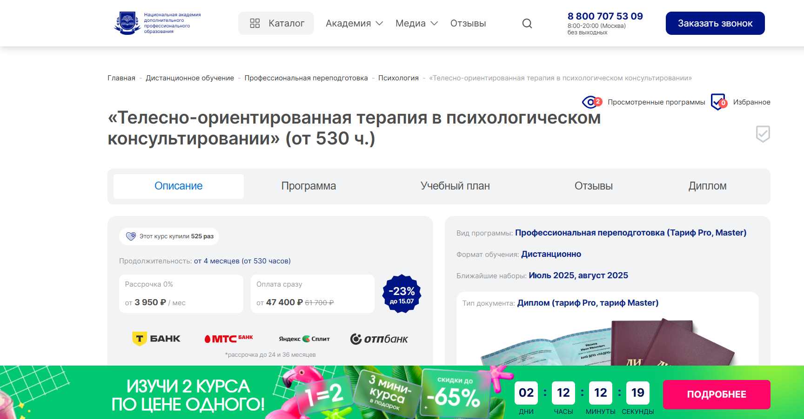
- ✅ Официальный сайт: nadpo.ru
- 💸 Цена: от 47 400 ₽ (со скидкой 23%)
- 💳 Рассрочка: 0%, от 3 950 ₽ в месяц до 24–36 месяцев
- 📚 Формат: дистанционное обучение, видеолекции, практикумы, книги, фильмы, супервизии, работа в тройках
- ⏳ Продолжительность: от 4 месяцев (от 530 часов)
- 📜 Документ: диплом о профессиональной переподготовке, действующий по всей РФ
- 📝 Трудоустройство: поддержка от HR-наставников и предложения от партнёров во время обучения
- 🔷 Для кого подходит курс: для психологов, коучей и всех, кто хочет освоить методы телесной терапии и углубить навыки консультирования
Особенности:
Программа сочетает дистанционный формат обучения с интенсивной практикой и проработанными техниками телесно-ориентированной терапии. Слушатели проходят обучение под руководством опытных специалистов, получают доступ к библиотекам, участвуют в обсуждениях кейсов и супервизиях. Платформа позволяет гибко совмещать обучение с работой, а практическая часть помогает сразу применять полученные знания. Более 30% занятий направлено на развитие практического навыка. Студенты проходят этапы личной терапии, индивидуального и группового консультирования, что усиливает эффект обучения.
Чему учатся студенты:
- Основам телесно-ориентированной психотерапии
- Индивидуальному и групповому консультированию
- Методам работы с психосоматическими проблемами
- Анализу характера по Вильгельму Райху
- Биоэнергетическому анализу Александра Лоуэна
- Методам структурной интеграции
- Техникам дистанционного консультирования
- Диагностике базовых личностных нарушений
- Экспрессивным техникам арт-терапии
Преподаватели:
- Тарасов Сергей Васильевич — кандидат психологических наук, доцент, стаж с 2000 года
- Егорова Наталья Николаевна — кандидат психологических наук, стаж 22 года
- Челнокова Ирина Александровна — кандидат психологических наук, член Российской ассоциации КПТ
- Санжапова Эльмира Викторовна — кандидат педагогических наук, доцент, стаж с 2005 года
Преимущества:
- Дистанционный формат с гибким графиком обучения
- Более 250 часов практики с преподавателями
- Поддержка при трудоустройстве и карьерном развитии
- Возможность совмещать с работой или другой деятельностью
- Подходит для психологов, коучей и специалистов смежных сфер
- Слушатели получают официальный диплом установленного образца
- Бесплатный доступ к ЛитРес и Библиоклубу
- Обратная связь на каждом этапе обучения
Отзывы учеников:
Выпускники отмечают высокий уровень организации обучения и профессионализм преподавателей. Часто подчеркивают доступность учебных материалов, насыщенную практику и возможность освоить востребованные методы телесной терапии в удобном дистанционном формате. Многим нравится поддержка кураторов и атмосфера участия в реальных терапевтических процессах уже во время курса.
Перейти на официальный сайт курса5. Психосоматика и телесная психотерапия – Национальная академия дополнительного профессионального образования
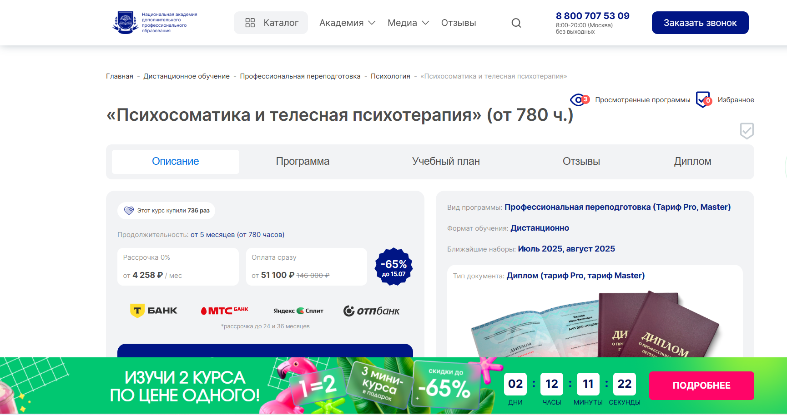
- ✅ Официальный сайт: nadpo.ru
- 💸 Цена: от 51 100 ₽ (со скидкой – 65%)
- 💳 Рассрочка: от 4 258 ₽ в месяц, сроком до 24 или 36 месяцев
- 📚 Формат: дистанционный формат обучения, включает видеоуроки, практические задания, воркшопы, супервизии, чтение литературы и просмотр кейсов
- ⏳ Продолжительность: от 5 месяцев (от 780 академических часов)
- 📜 Документ: диплом установленного образца о профессиональной переподготовке, действует на всей территории РФ
- 📝 Трудоустройство: бесплатный доступ к платформе для получения клиентов, поддержка в построении частной практики и карьерном росте
- 🔷 Для кого подходит курс: для тех, кто хочет освоить телесную терапию с нуля, улучшить навыки в консультировании или сменить сферу деятельности
Особенности:
Программа профессиональной переподготовки в формате дистанционного образования ориентирована на глубокое изучение телесной терапии. Она подходит как для новичков, так и для действующих специалистов, желающих расширить свои навыки в телесно-ориентированной психотерапии. Практические модули занимают более 30% времени, позволяя студентам освоить техники на практике ещё до окончания обучения. Обучение сопровождается консультациями, супервизиями и доступом к закрытым платформам для первых клиентов. Каждый студент получает помощь в составлении резюме и прохождении собеседований. Программа соответствует ФГОС, что делает диплом официальным и признанным.
Чему учатся студенты:
- Применению телесно-ориентированной терапии в индивидуальном консультировании
- Методам психосоматической диагностики и релаксации
- Техникам дыхательной саморегуляции и работе с вниманием
- Проработке травм и эмоциональных блоков через телесные сигналы
- Построению эффективных терапевтических сессий
- Навыкам консультирования и проведению групповой терапии
Преподаватели:
- Тарасов Сергей Васильевич — кандидат психологических наук, доцент, опыт с 2000 года
- Егорова Наталья Николаевна — кандидат психологических наук, опыт 22 года
- Челнокова Ирина Александровна — кандидат психологических наук, член Российской ассоциации КПТ, опыт с 2008 года
- Санжапова Эльмира Викторовна — кандидат педагогических наук, доцент, опыт с 2005 года
Преимущества:
- Программа обучения соответствует государственным стандартам
- Удобный формат дистанционного обучения с индивидуальным графиком
- Доступ к библиотекам ЛитРес и Библиоклуб
- Более 400 часов практической подготовки
- Реальная отработка навыков в тройках: клиент, терапевт, наблюдатель
- Кешбэк на повторное обучение и выгодные условия оплаты
- Поддержка от преподавателей и карьерных консультантов на всех этапах
- Возможность начать работать психологом сразу после окончания курса
Отзывы учеников:
Слушатели особенно отмечают структурированность дистанционного формата, высокое качество обратной связи от преподавателей и практико-ориентированный подход. Многие подчеркивают удобный доступ к материалам и насыщенную практическую часть. Платформа для первых клиентов – частое преимущество, выделяемое выпускниками.
Перейти на официальный сайт курса6. Телесно-ориентированная психотерапия – МШПП
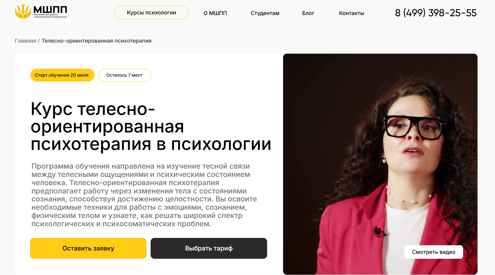- ✅ Официальный сайт: mspp.online
- 💸 Цена: от 90 000 ₽ (в зависимости от тарифа)
- 💳 Рассрочка: от 2 500 ₽/мес., от 3 до 36 месяцев, доступна без участия банков
- 📚 Формат: дистанционный формат, включает видеолекции, практические задания, супервизии, онлайн-вебинары, групповую терапию и обратную связь от преподавателей
- ⏳ Продолжительность: 6 месяцев, включая итоговую аттестацию
- 📜 Документ: диплом о профессиональной переподготовке установленного образца
- 📝 Трудоустройство: помощь карьерного центра: сопровождение от составления резюме до прохождения испытательного срока
- 🔷 Для кого подходит курс: для тех, кто хочет сменить профессию, практикующих психологов, студентов, выпускников, и специалистов, стремящихся начать частную практику
Особенности:
Образовательная программа направлена на освоение телесной терапии через системный подход. Участники учатся выявлять и устранять психосоматические проявления с помощью работы с телом и сознанием. Курс ориентирован на развитие практических навыков, включая личную терапию, работу в мини-группах и супервизии. Занятия проходят в удобном дистанционном формате на собственной платформе с доступом к электронным учебным материалам. Слушатели получают постоянную поддержку менторов и кураторов, что помогает пройти обучение без стресса и в удобном темпе. После окончания курса можно начать работу с клиентами онлайн и офлайн.
Чему учатся студенты:
- Работать с психосоматикой через телесную осознанность
- Применять методы телесно-ориентированной терапии для индивидуального консультирования
- Выражать и перерабатывать эмоции через телесные практики
- Проводить телесную диагностику и корректировать психосоматические расстройства
- Организовывать работу с клиентом и вести онлайн-консультирование
- Использовать техники саморегуляции и профилактики профессионального выгорания
Преподаватели:
- 48 преподавателей — практикующие психологи и психотерапевты
- Все преподаватели имеют опыт личной терапии и работы с клиентами
- Кураторы курса проходят профессиональную сертификацию и супервизии
Преимущества:
- Возможность изучать телесную психотерапию в дистанционном формате с гибким графиком
- Доступ к платформе 24/7 и сопровождение личным ментором
- Углубленная практика в мини-группах и тройках
- Выдается диплом, признаваемый международными работодателями
- Курс признан экспертами лучшим для получения новой профессии в сфере психологии
- Включены модули по этике, продвижению и организации частной практики
- Доступ навсегда ко всем материалам и записям вебинаров
Отзывы учеников:
Студенты особенно ценят удобный дистанционный формат, сильную практическую составляющую и поддержку преподавателей. Многие отмечают уверенность, которую приобретают уже во время обучения. Отдельно подчеркиваются насыщенность программы, грамотная структура и возможность сразу применять знания на практике.
Перейти на официальный сайт курса7. Психосоматика и телесная психотерапия: теория, практика – Московский Институт Профессионального Образования
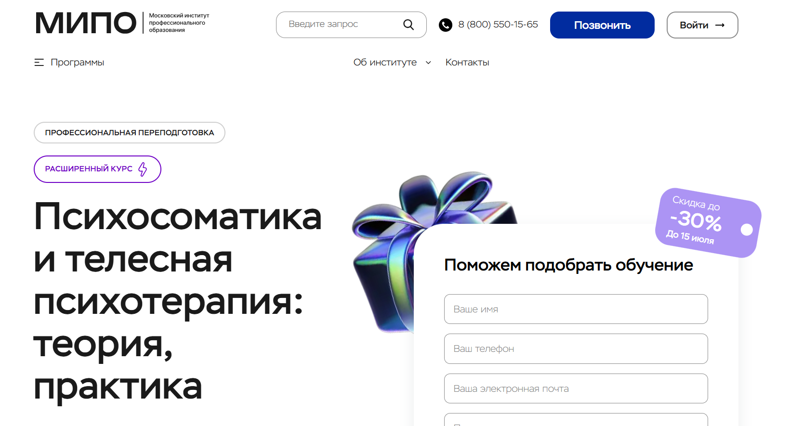
- ✅ Официальный сайт: mipo.msk.ru
- 💸 Цена: от 56 109 ₽ (со скидкой до 30%).
- 💳 Рассрочка: до 24 месяцев, от 2 339 ₽/мес.
- 📚 Формат: дистанционное обучение, онлайн-вебинары, видеоуроки, кейсы, тесты, практические задания, поддержка куратора.
- ⏳ Продолжительность: 5 месяцев, 440 академических часов.
- 📜 Документ: диплом о профессиональной переподготовке, регистрация в ФИС ФРДО.
- 📝 Трудоустройство: поддержка карьерного центра и выпуск диплома, соответствующего требованиям официального трудоустройства.
- 🔷 Для кого подходит курс: новички в психологии, специалисты без диплома, желающие освоить телесно-ориентированную терапию или использовать знания для себя.
Особенности:
Курс сочетает теоретическую и практическую подготовку в области телесной терапии. Обучение проходит в дистанционном формате, что особенно удобно для тех, кто совмещает профессиональное развитие с работой. Особое внимание уделяется техникам телесно-ориентированной психотерапии, практическим занятиям и индивидуальному консультированию. Студенты получают обратную связь от преподавателей через куратора, участвуют в обсуждениях кейсов и выполняют задания, закрепляя навыки. Программа помогает не только стать специалистом, но и глубже понять себя, научиться помогать другим и адаптироваться к запросам клиентов. Полученные знания применимы как в индивидуальной, так и в групповой терапии. После окончания курса слушатели получают официальный диплом установленного образца.
Чему учатся студенты:
- Понимать причины психосоматических расстройств
- Применять методы телесно-ориентированной терапии
- Работать с тревожными расстройствами и депрессией
- Проводить личную и групповую терапию
- Анализировать и сопровождать психоэмоциональные состояния
- Осваивать методы индивидуального консультирования
- Применять практические упражнения телесной терапии
Преподаватели:
- Урывчикова Татьяна Геннадьевна — клинический психолог, нейропсихолог, член ассоциации когнитивно-поведенческой психотерапии
- Перемолотова Ирина Александровна — арт-терапевт, член ICI, практикующий психолог
- Цяпало Анна — сертифицированный сексотерапевт, член Ассоциации психоаналитического коучинга
- Миркина Елена — тренер по Soft-skills, клинический психолог, президент фонда развития потенциала
- Сальникова Дарья — научный сотрудник РАО, дефектолог, специальный психолог
- Балобанов Василий — семейный психолог, бизнес-наставник Like Центра, эксперт 1 канала
Преимущества:
- Форматы обучения адаптированы под любой график
- Программа подходит для освоения профессии с нуля
- Дистанционные курсы с доступом из любой точки мира
- Поддержка менторов, кураторов и методистов на всех этапах
- Диплом котируется в России и за рубежом
- Доступ к вебинарам, практическим материалам и сообществу экспертов
- Обратная связь от преподавателей через систему дистанционного обучения
- Налоговый вычет до 13% на стоимость обучения
Отзывы учеников:
Слушатели курса отмечают доступный дистанционный формат, насыщенную программу и внимание преподавателей. Среди плюсов чаще всего выделяют профессиональную подачу материала, помощь кураторов, удобный личный кабинет и возможность совмещать обучение с работой. Высоко оценивают диплом, который позволяет официально работать психологом.
Перейти на официальный сайт курса8. Психосоматика и телесно-ориентированная терапия – Московский институт технологий и управления
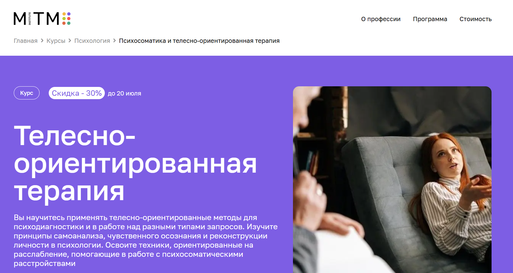
- ✅ Официальный сайт: mitm.institute
- 💸 Цена: 157 080 ₽, скидка 30% — 110 040 ₽
- 💳 Рассрочка: беспроцентная, сроком до 12 месяцев - 13 090 ₽/мес, скидка 30% — 9 170 ₽/мес
- 📚 Формат: дистанционный формат — видеолекции, супервизии, практикумы, задания, поддержка куратора
- ⏳ Продолжительность: 12 месяцев (1500 часов)
- 📜 Документ: диплом о профессиональной переподготовке государственного образца
- 📝 Трудоустройство: курс дает возможность получить профессию и начать практику после окончания обучения
- 🔷 Для кого подходит курс: для психологов, психотерапевтов, медицинских работников, начинающих специалистов, интересующихся связью тела и психики
Особенности:
Программа в дистанционном формате ориентирована на получение прикладных знаний и навыков телесной терапии без отрыва от работы. Слушатели осваивают методы телесно-ориентированной терапии, которые позволяют работать с психосоматикой и эмоциональным состоянием клиента. Участники получают доступ к онлайн-материалам, обучаются по индивидуальному графику и проходят личную терапию. Практическая часть реализуется через работу в тройках, супервизии и ведение групп. Все занятия доступны в записи. В программу включены дополнительные форматы — киноклуб и мастерские, где можно анализировать кейсы и обмениваться опытом.
Чему учатся студенты:
- Выявлять психологические причины телесных симптомов
- Проводить психодиагностику с опорой на телесные проявления
- Работать с головной болью, мигренями, нарушениями осанки, стрессом
- Применять техники саморегуляции и расслабления
- Анализировать клиентские реакции и строить стратегию терапии
- Понимать границы компетенций и взаимодействовать с врачами
Преподаватели:
- Кураторы и супервизоры: специалисты института с опытом практики в телесно-ориентированной терапии
Преимущества:
- Формат дистанционного образования — подходит для совмещения с работой
- Поддержка куратора и доступ к экспертным материалам 24/7
- Возможность освоить профессию с нуля
- Документ установленного образца с внесением в ФРДО
- Курс доступен для жителей других стран
- Гибкий график обучения под личный ритм
- Разнообразные форматы — от лекций до личной терапии
- Профессиональная переподготовка с практической направленностью
Отзывы учеников:
Студенты отмечают удобный формат дистанционного обучения, наличие обратной связи от преподавателей и насыщенную практику. Среди плюсов — возможность сменить профессию, обучаться в индивидуальном темпе и получить качественное психологическое образование без отрыва от работы.
Перейти на официальный сайт курса9. Телесно-ориентированная терапия в психологическом консультировании – Институт Профессионального Образования
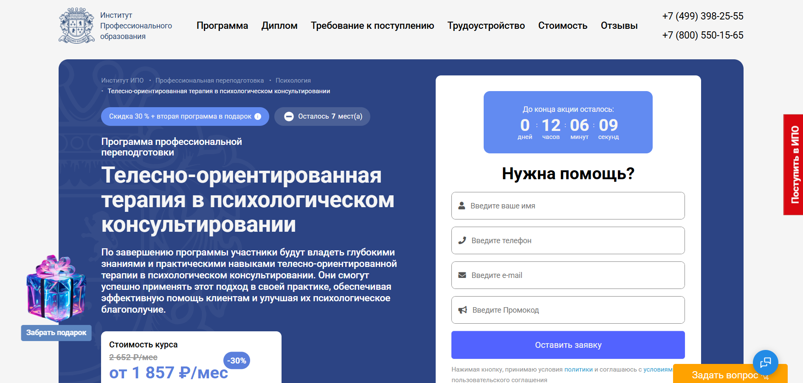
- ✅ Официальный сайт: ipo.msk.ru
- 💸 Цена: со скидкой 30% — 44 569 ₽ вместо 63 670 ₽.
- 💳 Рассрочка: от 1 857 ₽/мес до 24 месяцев.
- 📚 Формат: дистанционный формат — видеолекции, практические задания, тесты, онлайн-вебинары, воркшопы, работа в парах.
- ⏳ Продолжительность: 598 часов — 6 месяцев.
- 📜 Документ: диплом установленного образца о профессиональной переподготовке.
- 📝 Трудоустройство: помощь в поиске работы, карьерные консультации, рекомендации, рассылка резюме.
- 🔷 Для кого подходит курс: начинающие специалисты, практикующие психологи, педагоги, соцработники, желающие освоить телесную психотерапию.
Особенности:
Программа рассчитана на гибкий график обучения, что позволяет совмещать учебу с работой. Обучение проходит в дистанционном формате, а слушатели получают доступ к записям занятий, практическим кейсам и менторской поддержке. Осваиваются современные методы телесно-ориентированной терапии, включая работу с телесными зажимами, психосоматикой и техникой осознанности. Курсы профессиональной подготовки помогают участникам овладеть навыками индивидуального консультирования и использовать телесные техники в практике. Выдается диплом, действующий по всей России. Подходит как для новичков, так и для тех, кто прошел курсы повышения квалификации в других направлениях психотерапии.
Чему учатся студенты:
- Пониманию целей и задач психологического консультирования
- Применению методов телесно-ориентированной терапии
- Диагностике психоэмоциональных состояний через телесные проявления
- Работе с психосоматическими симптомами и хроническим напряжением
- Использованию техник саморегуляции и дыхания
- Интеграции телесных и вербальных подходов в консультирование
- Этическому ведению телесной терапии
Преподаватели:
- Олеся Александровна Круглушина — консультирующий психолог, психотерапевт, преподаватель психологии
- Юлианна Евгеньевна Койфман — тренинг-менеджер, психолог в социальной сфере
- Наталья Викторовна Рыбальченко — преподаватель философии, профессиональный психолог
Преимущества:
- Дистанционное обучение по индивидуальному графику
- Поддержка менторов и кураторов на протяжении всего курса
- Диплом о переподготовке по окончанию обучения
- Доступ к библиотеке и профессиональному сообществу
- Онлайн-вебинары с практикующими специалистами
- Возможность совмещать обучение с основной занятостью
- Гарантированное карьерное сопровождение
- Дополнительные курсы и бонусы в подарок
Отзывы учеников:
Студенты отмечают доступность дистанционного формата, структурированную подачу материала и высокий уровень практической направленности. Особенно ценят возможность обучаться в удобном темпе, получать обратную связь и применять полученные знания в реальной практике.
Перейти на официальный сайт курса10. Телесно-ориентированная терапия в психологическом консультировании – Национальный центральный институт развития дополнительного образования
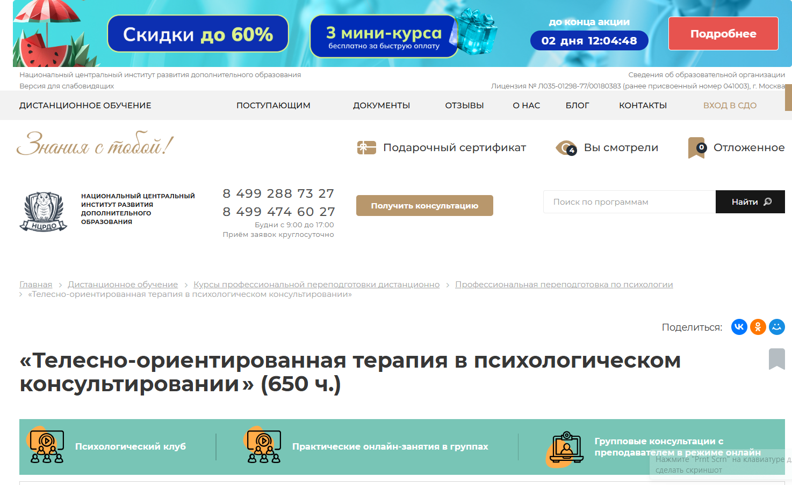
- ✅ Официальный сайт: ncrdo.ru
- 💸 Цена: 40 100 ₽ (полная цена — 93 500 ₽).
- 💳 Рассрочка: 1 114 ₽/мес на 36 месяцев от института или банка.
- 📚 Формат: дистанционное обучение, видеолекции, вебинары, тесты, практические задания, доступ к библиотекам ЛитРес и Библиоклуб.
- ⏳ Продолжительность: 5 месяцев (650 академических часов).
- 📜 Документ: диплом о профессиональной переподготовке установленного образца, регистрация в ФРДО.
- 📝 Трудоустройство: консультации HR-эксперта, поддержка в старте карьеры и повышении дохода.
- 🔷 Для кого подходит курс: для специалистов с психологическим или педагогическим образованием, практикующих психологов, студентов старших курсов, желающих освоить телесную психотерапию в дистанционном формате.
Особенности:
Программа обучения по телесно-ориентированной терапии ориентирована на практическое применение методов работы с психикой через тело. Курс удобно проходить в дистанционном формате — вы получаете доступ к системе обучения, вебинарам и библиотеке. Материалы адаптированы для удобного восприятия, без избыточной теории. Слушатели обучаются в комфортном графике, совмещая переподготовку с работой. После окончания курса выдается диплом, который официально регистрируется в Федеральной системе. Важный акцент сделан на практических навыках: проработка зажимов, изучение техник расслабления, диагностика через телесные проявления. Форматы обучения включают онлайн-занятия в группах и индивидуальные консультации. Вы получаете знания, востребованные в работе практического психолога и консультанта.
Чему учатся студенты:
- Методам телесно-ориентированной терапии и диагностики психоэмоциональных состояний
- Применению телесной терапии в индивидуальном и групповом консультировании
- Биоэнергетическому анализу, структурной интеграции, феноменологическим подходам
- Работе с личными зажимами и телесными блоками у клиентов
- Использованию техник телесной арт-терапии
Преподаватели:
- Мельникова Елена Васильевна — опыт с 2010 года
- Тышкевич Марина Юрьевна — опыт с 2006 года
- Шевченко Дария Игоревна — опыт с 2018 года
- Салихова Мария Романовна — опыт с 2007 года
Преимущества:
- Официальный диплом с регистрацией в ФРДО
- Обучение полностью дистанционное, подходит для совмещения с работой
- Бесплатный доступ к вебинарам и учебной литературе
- Гибкий учебный график и поддержка преподавателей
- Доступ к системе обучения без ограничений по времени
- Доступная стоимость и честная рассрочка
- Актуальные навыки для практического психолога
- Помощь выпускникам в трудоустройстве
Отзывы учеников:
Слушатели часто отмечают удобный формат дистанционного обучения и высокую квалификацию преподавателей. В отзывах подчеркиваются практическая направленность курса, насыщенность материала, гибкий график и оперативная обратная связь от специалистов. Дополнительным плюсом является возможность совмещать обучение с работой.
Перейти на официальный сайт курса11. Телесно-ориентированная терапия в психологическом консультировании — Центральная академия профессиональной переподготовки и повышения квалификации кадров
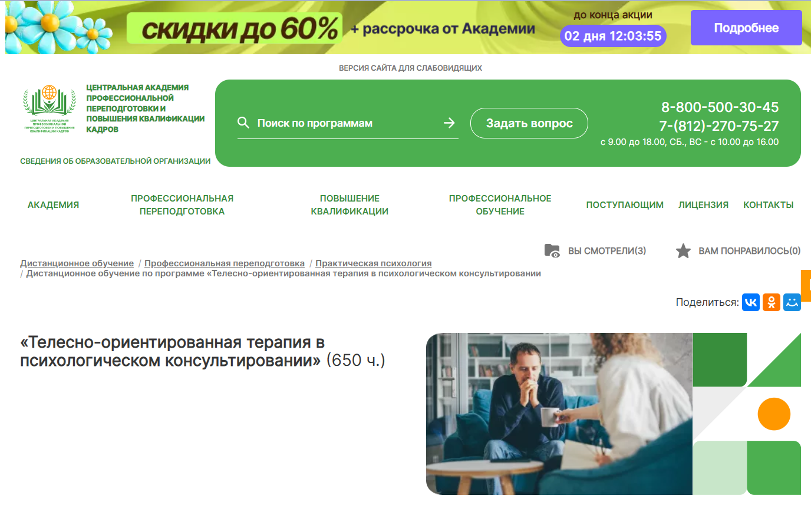
- ✅ Официальный сайт: appkk.ru
- 💸 Цена: 33 600 ₽ (полная цена — 56 700 ₽)
- 💳 Рассрочка: от 933 ₽/мес. на 36 месяцев
- 📚 Формат: дистанционный формат с видеоуроками, тестами, контрольными заданиями и библиотекой вебинаров
- ⏳ Продолжительность: 5 месяцев (650 часов)
- 📜 Документ: диплом установленного образца о профессиональной переподготовке (вносится в ФИС ФРДО)
- 📝 Трудоустройство: помощь HR-наставника, рассылка вакансий, консультации по трудоустройству
- 🔷 Для кого подходит курс: для практикующих психологов, студентов психологических направлений, а также тех, кто хочет пройти профессиональную переподготовку в сфере телесной терапии
Особенности:
Программа разработана с учетом современных методов телесно-ориентированной терапии и включает как теоретическую базу, так и практические задания. Дистанционный формат позволяет совмещать обучение с работой или другими занятиями, а материалы доступны 24/7. Удобный график обучения помогает освоить курс без стресса. Все документы о квалификации заносятся в государственный реестр. После заключения договора слушатели получают доступ к системе, где можно изучать лекции даже без интернета. Также предусмотрен бессрочный доступ к библиотеке вебинаров и аудиолекциям. Техподдержка работает ежедневно с 9:00 до 21:00.
Чему учатся студенты:
- Анализировать психосоматические проявления через телесную психотерапию
- Применять методы телесно-ориентированной терапии в консультировании
- Проводить индивидуальные и групповые сессии
- Освобождать тело клиента от мышечных зажимов и эмоциональных блоков
- Использовать техники личной терапии в рамках дистанционных курсов
- Работать с негативными переживаниями клиента на уровне тела
Преподаватели:
- Анастасия Регнер — HR-наставник, бизнес-тренер, специалист по стратегическим коммуникациям, участник международных форумов
Преимущества:
- Гибкий индивидуальный график обучения
- Доступ ко всем материалам после окончания курса
- Бессрочный доступ к вебинарам и лекциям
- Официальный диплом с внесением в реестр ФИС ФРДО
- Поддержка куратора и HR-консультанта
- Возможность учиться в любом месте с интернетом
- Доступные цены и варианты оплаты
- Психологическое образование, востребованное в разных сферах
Отзывы учеников:
Слушатели положительно отмечают удобный дистанционный формат, качество преподавания и насыщенность материала. Часто упоминается поддержка кураторов, грамотная подача информации и практическая направленность курса. Многие благодарны за помощь в трудоустройстве после получения диплома.
Перейти на официальный сайт курса12. Телесно-ориентированная терапия и работа с психосоматикой — Институт прикладной психологии в социальной сфере
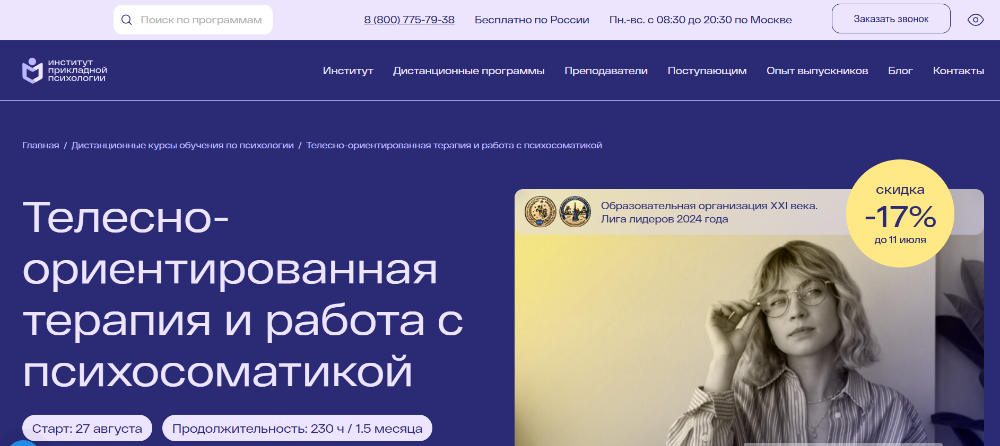- ✅ Официальный сайт: ippss.ru
- 💸 Цена: 26 500 ₽ (скидка 17%, обычная цена — 31 800 ₽)
- 💳 Рассрочка: не указана, возможна по согласованию
- 📚 Формат: дистанционный формат обучения: видеолекции, текстовые материалы, домашние задания, тесты, групповые мастер-классы, онлайн-консультации
- ⏳ Продолжительность: 2 месяца, 230 академических часов
- 📜 Документ: удостоверение о повышении квалификации с регистрацией в ФИС ФРДО
- 📝 Трудоустройство: официальное подтверждение квалификации, возможность практической деятельности
- 🔷 Для кого подходит курс: практикующим и начинающим психологам, специалистам смежных направлений, студентам, желающим освоить методы телесной терапии
Особенности:
Программа обучения по телесной терапии построена на сочетании теоретической базы и практических заданий. Удобный формат дистанционного обучения позволяет совмещать профессиональное развитие с текущей занятостью. Подходит тем, кто хочет работать с психосоматическими расстройствами через телесно-ориентированную психотерапию. Программа соответствует ФГОС и профстандарту «Психолог в социальной сфере». Слушатели получат доступ к более чем 10 000 вебинаров, инструментам, алгоритмам и видеоразборам техник. Каждое задание проверяется преподавателем. Обучение завершается получением официального удостоверения, действующего по всей России.
Чему учатся студенты:
- Применять методы телесно-ориентированной терапии в работе с психосоматикой
- Анализировать взаимосвязь психики и тела
- Выстраивать эффективную работу с клиентами по устранению телесных зажимов
- Проводить индивидуальное консультирование и групповую терапию
- Развивать навык диагностики психосоматических нарушений
Преподаватели:
- Губарева Наталья Владимировна — практикующий медицинский психолог, специалист по семейному консультированию и зависимому поведению
- Леонова Светлана Юрьевна — преподаватель ВУЗа, аналитический и клинический психолог, психолог-сексолог
Преимущества:
- Полностью дистанционный формат обучения без вступительных испытаний
- Поддержка преподавателей и сопровождение техподдержки 7 дней в неделю
- Доступ к учебным материалам сохраняется после окончания курса
- Выдается официальный документ установленного образца
- 3 мастер-класса с экспертом с более чем 10-летним опытом
- Доступ к онлайн-библиотеке с 10 000+ записями и ежемесячными вебинарами
- Личный кабинет с круглосуточным доступом к курсу
- Практические задания с проверкой и обратной связью
Отзывы учеников:
Слушатели отмечают понятный материал, профессионализм преподавателей и насыщенность практической частью. Многие довольны тем, что курс легко совмещается с работой, и ценят доступ к большим объемам дополнительных материалов. Также подчеркивают значимость официального удостоверения для профессиональной деятельности.
Перейти на официальный сайт курса13. Телесно-ориентированная терапия — Учебный центр АПОК
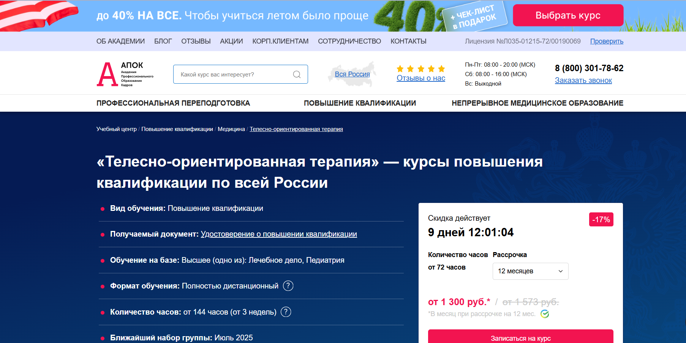
- ✅ Официальный сайт: apokdpo.ru
- 💸 Цена: от 15 600 ₽ (со скидкой 17%)
- 💳 Рассрочка: 12 месяцев от 1 300 ₽ в месяц
- 📚 Формат: дистанционный формат: видеоуроки, методические материалы, тестирование, домашние задания
- ⏳ Продолжительность: от 72 до 144 академических часов (от 3 недель)
- 📜 Документ: удостоверение о повышении квалификации, внесенное в ФИС ФРДО
- 📝 Трудоустройство: легитимный документ для подтверждения квалификации, соответствие профстандартам и ФГОС
- 🔷 Для кого подходит курс: для специалистов с высшим образованием в области лечебного дела и педиатрии, занимающихся психологическим консультированием, личной и групповой терапией
Особенности:
Образовательная программа ориентирована на дистанционное обучение с удобным форматом для практикующих психологов, психотерапевтов и телесных терапевтов. Курс включает изучение методов телесно-ориентированной терапии и обновление знаний по психотерапии. Все материалы доступны онлайн в любое время, пересдачи тестов бесплатны. По окончании курса участники получают удостоверение установленного образца, действующее на всей территории РФ. Программа учитывает требования Минздрава, ФГОС и профстандартов. Бесплатная доставка документов и поддержка менеджеров на каждом этапе делают прохождение курсов максимально комфортным. Слушатели могут совмещать обучение с практикой благодаря гибкому графику обучения.
Чему учатся студенты:
- Применять техники телесно-ориентированной психотерапии в индивидуальном консультировании
- Работать с телесными реакциями клиента при психологических проблемах и травмах
- Организовывать и проводить групповые терапевтические занятия
- Осуществлять психологическую поддержку с учетом психосоматических проявлений
- Использовать методы телесной терапии в рамках личной терапии и психокоррекции
Преподаватели:
- Информация о преподавателях не указана на сайте. Программа утверждена учебным центром с лицензией и соответствует государственным образовательным стандартам.
Преимущества:
- Дистанционное обучение с доступом из любой точки России
- Государственная лицензия и официальные удостоверения
- Гибкий индивидуальный график прохождения курсов
- Бесплатная доставка документов после окончания обучения
- Персональная программа и сопровождение менеджера
- Скидки до 40% при обучении в группе или повторной покупке
- 0% рассрочка на 6 и 12 месяцев без переплат
- Возможность вернуть деньги при неудовлетворенности обучением
Отзывы учеников:
Слушатели курса хвалят удобный дистанционный формат, качественные учебные материалы и профессиональную поддержку менеджеров. Отмечают быструю обратную связь и простоту процесса обучения. Особенно ценят легитимность документа, который выдается после прохождения курса, и возможность совмещать обучение с работой.
Перейти на официальный сайт курса14. Телесно-ориентированная терапия – Учебный центр дополнительного профессионального образования «ЭКОДПО»
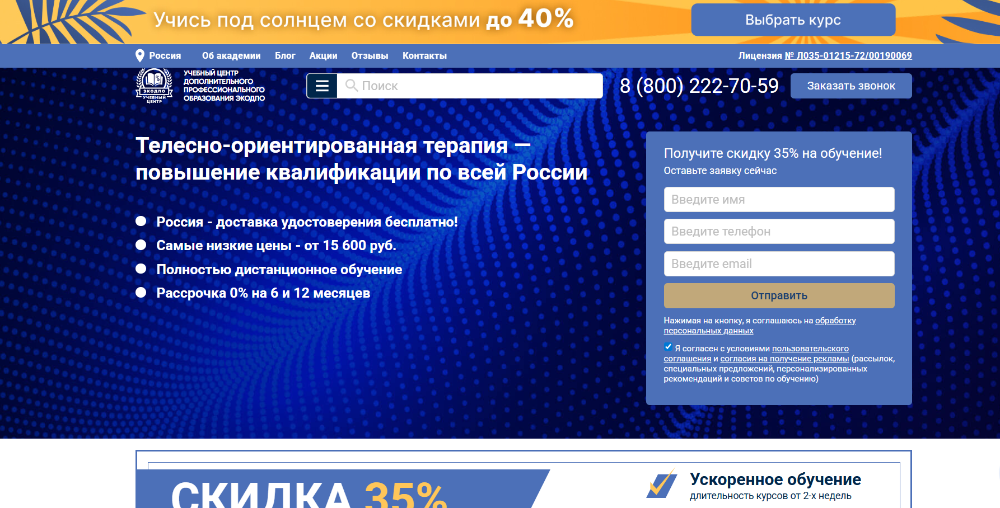
- ✅ Официальный сайт: ecodpo.ru
- 💸 Цена: от 15 600 ₽ (со скидкой 35%)
- 💳 Рассрочка: от 1 300 ₽/мес. на 6 или 12 месяцев без процентов
- 📚 Формат: дистанционный формат — лекции, тесты, задания, видеоматериалы, библиотека 24/7
- ⏳ Продолжительность: от 1,5 до 3 недель (72–144 академических часа)
- 📜 Документ: удостоверение о повышении квалификации установленного образца
- 📝 Трудоустройство: возможна работа в центрах психологической помощи, частная практика, консультации онлайн
- 🔷 Для кого подходит курс: для практикующих психологов, студентов с профильным образованием, специалистов в перерыве карьеры
Особенности:
Программа дистанционного обучения позволяет осваивать методы телесно-ориентированной психотерапии без отрыва от основной деятельности. Студенты проходят обучение в собственном темпе, получая доступ к учебным материалам через личный кабинет. Центр ЭКОДПО предоставляет возможность начать обучение сразу после оплаты — не нужно ждать набора группы. Итоговая аттестация проводится онлайн, пересдачи неограниченны и бесплатны. По завершении выдается удостоверение с регистрацией в ФИС ФРДО. Документы доставляются бесплатно по всей России. Программа соответствует требованиям ФЗ №273. Возможно составление индивидуального учебного плана.
Чему учатся студенты:
- Методам работы с телом и мышечными зажимами
- Коррекции личностных нарушений с помощью телесной терапии
- Консультированию в индивидуальном и групповом формате
- Анализу связи тела и эмоций
- Работе с бессознательными процессами через тело
- Созданию коррекционно-развивающих программ
Преподаватели:
- Преподаватели с опытом в практическом психологическом консультировании, разрабатывают методические материалы и сопровождают студентов на всех этапах обучения (данные на официальном сайте не указаны поимённо)
Преимущества:
- Доступ к обучающим материалам 24/7 из любой точки страны
- Бесплатная пересдача тестов, неограниченное количество попыток
- Не требуется вступительных экзаменов
- Зачисление сразу после оплаты
- Возможность обучаться в удобном темпе
- Бесплатная доставка удостоверения
- Персонализированная учебная программа по запросу
- Соответствие законодательству РФ
Отзывы учеников:
Слушатели хвалят удобный дистанционный формат, высокую организацию процесса и поддержку кураторов. Многие отмечают доступность платформы, актуальность знаний, удобство сдачи экзаменов и честную цену обучения. Отзывы подчеркивают, что курс помогает восстановить и расширить навыки работы в психологической практике.
Перейти на официальный сайт курса15. Телесный терапевт – Учебный центр «НЦПО»

- ✅ Официальный сайт: ncpo.ru
- 💸 Цена: от 19 800 ₽ (при оплате в день заявки скидка 3 000 ₽)
- 💳 Рассрочка: 0%, от 1 650 ₽ в месяц
- 📚 Формат: дистанционный формат — доступ 24/7, видеоуроки, тесты, практические задания, методические материалы
- ⏳ Продолжительность: от 250 до 1600 академических часов
- 📜 Документ: диплом о профессиональной переподготовке установленного образца с регистрацией в реестре ФРДО
- 📝 Трудоустройство: повышение квалификации и официальное подтверждение новой специализации
- 🔷 Для кого подходит курс: для специалистов с перерывом в работе, желающих сменить сферу, повысить квалификацию или обучить сотрудников
Особенности:
Курс ориентирован на изучение методов телесно-ориентированной терапии и подходит для профессионалов, стремящихся получить востребованные знания в области психотерапии. Обучение проходит в дистанционном формате, что позволяет совмещать его с профессиональной деятельностью. После окончания курса слушатели получают диплом установленного образца, действующий бессрочно. Все документы оформляются официально — с договором и внесением в государственный реестр. Материалы курса остаются доступными навсегда. Гибкий график позволяет выбрать удобный темп прохождения обучения. Предусмотрена переаттестация для тех, кто уже проходил курсы профессиональной переподготовки ранее.
Чему учатся студенты:
- Применять методы телесно-ориентированной психотерапии в психологическом консультировании
- Проводить индивидуальные и групповые сессии
- Использовать техники телесной терапии для работы с психосоматическими проявлениями
- Разрабатывать практические упражнения для клиентов
- Адаптировать программы под конкретные психологические запросы
Преподаватели:
- Терешков Александр Леонидович — генеральный директор, эксперт в области дополнительного профессионального образования
- Грезнева Диана — специалист по телесной терапии, куратор программ НЦПО
- Малкова Анна — практикующий психолог, преподаватель дистанционных курсов
Преимущества:
- Дистанционное обучение с доступом к материалам 24/7
- Документы отправляются бесплатно по всей России
- Обучение проходит на платформе с личным кабинетом
- Диплом действует бессрочно и подходит для подтверждения квалификации
- Программа адаптируется под цели слушателя
- Все данные вносятся в реестр ФРДО в течение 3 дней
- Официальный договор и юридическая защита студентов
- Можно пройти обучение без отрыва от работы
Отзывы учеников:
В отзывах студенты часто отмечают удобный формат дистанционного обучения, доступность материалов и оперативность менеджеров. Многим понравился индивидуальный подход и возможность изучать материалы в своем темпе. Высоко оценивается и юридическая прозрачность оформления курса: наличие договора и официальных документов внушает доверие.
Перейти на официальный сайт курса16. Психосоматика и телесная психотерапия: теория, практика – Национальная академия дополнительного профессионального образования
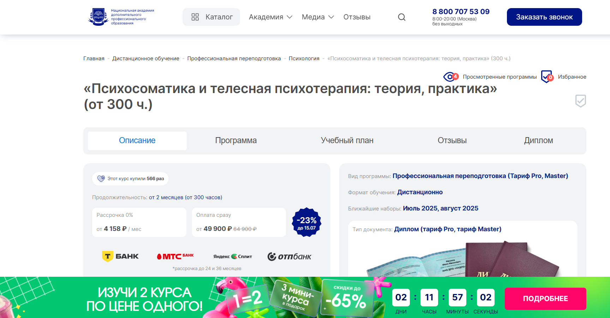
- ✅ Официальный сайт: nadpo.ru
- 💸 Цена: от 49 900 ₽ (со скидкой 23%)
- 💳 Рассрочка: 0%, доступна до 24–36 месяцев, от 4 158 ₽/мес
- 📚 Формат: дистанционный формат, практические задания, супервизии, воркшопы, доступ к библиотекам ЛитРес и Библиоклуб
- ⏳ Продолжительность: от 2 месяцев, 300+ часов (включая 240 часов практики)
- 📜 Документ: диплом о профессиональной переподготовке, соответствует требованиям ФГОС
- 📝 Трудоустройство: поддержка от HR-наставников, предложения от партнёров во время обучения
- 🔷 Для кого подходит курс: для начинающих, профессиональных психологов, желающих повысить квалификацию, и всех, кто хочет глубже понять связь тела и психики
Особенности:
Курс построен по принципам телесно-ориентированной терапии и сочетает теорию с обширной практикой. Обучение ведётся в дистанционном формате, что позволяет студентам самостоятельно выбирать график и совмещать обучение с другими задачами. Уже с первых недель происходит погружение в работу с клиентскими запросами. Поддержка преподавателей, участие в супервизиях и воркшопах дают реальный опыт, аналогичный очной подготовке. По окончании курса выдается диплом, дающий право на индивидуальное консультирование. Программа подойдёт как для личной терапии, так и для освоения новых направлений психотерапии.
Чему учатся студенты:
- Работе с психосоматическими симптомами через методы телесно-ориентированной терапии
- Пониманию невербальных сигналов тела и диагностике психологических проблем
- Применению телесных техник для снятия стресса, напряжения и повышения осознанности
- Навыкам индивидуального и группового консультирования
- Проведению коррекционной работы с психосоматическими расстройствами
- Организации частной практики и ведению клиентских сессий онлайн
Преподаватели:
- Тарасов Сергей Васильевич — кандидат психологических наук, доцент, с 2000 года в практике
- Егорова Наталья Николаевна — кандидат психологических наук, 22 года опыта
- Челнокова Ирина Александровна — кандидат психологических наук, член Российской ассоциации КПТ
- Санжапова Эльмира Викторовна — кандидат педагогических наук, доцент, практикует с 2005 года
Преимущества:
- Более 30% практических занятий в процессе обучения
- Индивидуальный график обучения под любой ритм жизни
- Возможность пройти курс полностью онлайн с доступом к цифровым библиотекам
- Навыки личной терапии и консультирования отрабатываются с первых недель
- Включение в профессиональное сообщество телесных терапевтов
- Помощь в трудоустройстве и рекомендации партнёров во время обучения
- Курс соответствует ФГОС — как в вузе, но за 2 месяца
- Кешбэк и скидки на последующие дистанционные курсы
Отзывы учеников:
Студенты отмечают удобный формат обучения, высокий уровень преподавателей и обилие практических заданий. Многие хвалят возможность сразу отрабатывать технику телесной терапии, гибкий график и профессиональную поддержку на каждом этапе. В отзывах часто подчеркивается, что обучение помогает не только в работе, но и в личной жизни — помогает глубже понимать свои эмоции и состояние тела.
Перейти на официальный сайт курса17. Телесно-ориентированная психотерапия – Национальная академия дополнительного профессионального образования
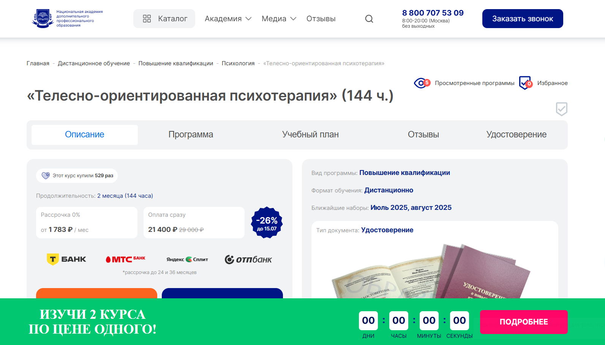
- ✅ Официальный сайт: nadpo.ru
- 💸 Цена: 21 400 ₽ (со скидкой , стандартная стоимость 29 000 ₽)
- 💳 Рассрочка: от 1 783 ₽ в месяц, возможна на 24 и 36 месяцев, 0% переплат
- 📚 Формат: дистанционный формат — видеолекции, задания, доступ к библиотекам ЛитРес и БиблиоКлуб
- ⏳ Продолжительность: 2 месяца (144 часа)
- 📜 Документ: удостоверение о повышении квалификации установленного государственного образца
- 📝 Трудоустройство: возможность начать частную практику, работать в клиниках или онлайн-платформах
- 🔷 Для кого подходит курс: специалисты с психологическим образованием, практикующие психологи, а также начинающие консультанты
Особенности:
Программа направлена на изучение методов телесно-ориентированной терапии и раскрытие взаимосвязи между телом, эмоциями и психикой. Обучение проходит в дистанционном формате, что делает его удобным для специалистов с любым графиком. Студенты получают навыки диагностики телесных блоков, освоят методики дыхания, работы с мимикой и движением. Документы о квалификации вносятся в реестр ФИС ФРДО. После окончания курса выпускники смогут применять полученные знания в индивидуальном консультировании, групповой и личной терапии. Образование позволяет повысить квалификацию и выйти на новый уровень профессиональной деятельности. Удобная рассрочка и возможность кешбэка делают курс максимально доступным.
Чему учатся студенты:
- Работать с психосоматикой через телесную терапию
- Понимать феноменологические и терапевтические подходы
- Использовать дыхательные техники и методы эмоционального раскрепощения
- Проводить анализ телесных сигналов и движений
- Применять структурную интеграцию и биосинтез
- Работать с личностными нарушениями через тело
Преподаватели:
- Тарасов Сергей Васильевич — кандидат психологических наук, доцент, стаж с 2000 года
- Егорова Наталья Николаевна — кандидат психологических наук, опыт более 22 лет
- Челнокова Ирина Александровна — кандидат психологических наук, член Российской ассоциации КПТ, стаж с 2008 года
- Санжапова Эльмира Викторовна — кандидат педагогических наук, доцент, стаж с 2005 года
Преимущества:
- Удобный дистанционный формат — обучение в любое время
- Документы включаются в государственный реестр ФИС ФРДО
- Кешбэк 1070 бонусных баллов за покупку
- Обучение у практикующих экспертов с реальным опытом
- Доступ к библиотекам и методическим материалам
- Подходит для работы как онлайн, так и офлайн
- Программа входит в ТОП-3 по соотношению цены и качества
- Быстрый старт в профессии телесного терапевта
Отзывы учеников:
Обучающиеся отмечают доступность подачи материала, высокую квалификацию преподавателей и удобный дистанционный формат. Часто выделяют возможность совмещать курс с работой, а также практическую направленность программы. Многие подчеркивают, что после прохождения обучения начали применять методы в своей практике с первыми результатами уже во время курса.
Перейти на официальный сайт курса18. Психосоматика и телесная психотерапия: теория, практика — Национальная академия дополнительного профессионального образования
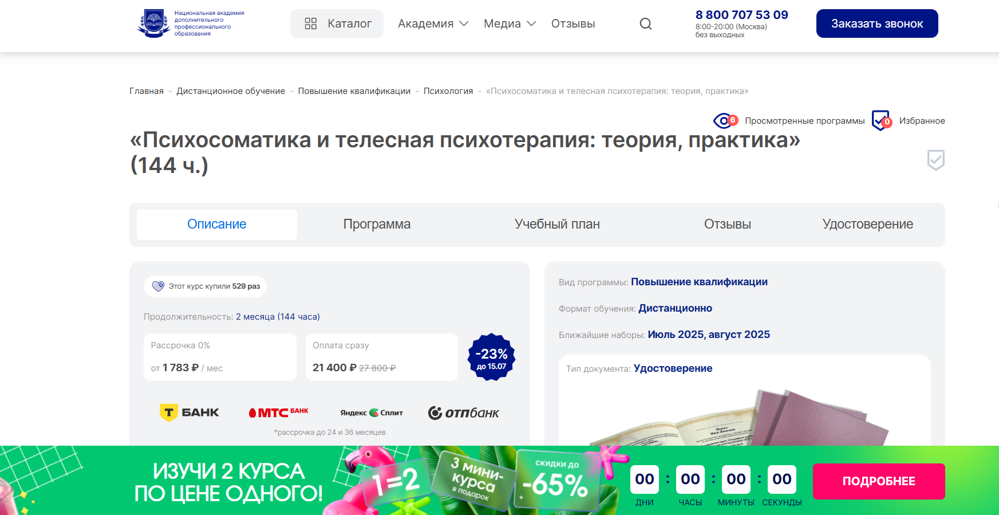
- ✅ Официальный сайт: nadpo.ru
- 💸 Цена обучения: 21 400 ₽ (вместо 27 800 ₽)
- 💳 Рассрочка: от 1 783 ₽ в месяц на срок до 24–36 месяцев, 0% переплаты
- 📚 Формат: дистанционное обучение, включает видеоуроки, тесты, доступ к библиотекам ЛитРес и Библиоклуб
- ⏳ Продолжительность: 2 месяца, 144 академических часа
- 📜 Документ: удостоверение о повышении квалификации установленного образца с внесением в ФИС ФРДО
- 📝 Трудоустройство: возможность вести частную практику, работать в клиниках и онлайн
- 🔷 Для кого подходит курс: для специалистов, желающих расширить знания в области телесно-ориентированной терапии, и начинающих, заинтересованных в психосоматике
Особенности:
Курс ориентирован на развитие практических навыков телесно-ориентированной психотерапии и психосоматической коррекции. Дистанционный формат обучения позволяет совмещать учебу с работой и другими делами. Студенты получают доступ к учебным материалам в любое удобное время. Акцент сделан на практическом применении методов телесной терапии в работе с клиентами. В курс включены техники экстренной релаксации, дыхательной саморегуляции, телесной осознанности и управления вниманием. Обучение проходит под руководством опытных преподавателей-практиков. По окончании курса выдается удостоверение, позволяющее легально оказывать психологическое консультирование в области психосоматики.
Чему учатся студенты:
- Работе с психосоматическими симптомами и их психологическими причинами
- Применению методов телесно-ориентированной терапии
- Техникам телесной релаксации и снятия эмоционального напряжения
- Осознанию телесных блоков и проработке подавленных эмоций
- Навыкам индивидуального и группового консультирования
- Телесно-ориентированной работе с образами и вниманием
Преподаватели:
- Тарасов Сергей Васильевич — кандидат психологических наук, доцент, практикует с 2000 года
- Егорова Наталья Николаевна — кандидат психологических наук, более 22 лет практического опыта
- Челнокова Ирина Александровна — кандидат психологических наук, член Российской ассоциации КПТ
- Санжапова Эльмира Викторовна — кандидат педагогических наук, доцент, опыт с 2005 года
Преимущества:
- Удобный дистанционный формат обучения с доступом в любое время
- Официальное удостоверение, внесённое в реестр ФИС ФРДО
- Беспроцентная рассрочка до 36 месяцев
- Курс подходит как для профессионалов, так и для личной проработки
- Методы телесно-ориентированной терапии применимы в практике и жизни
- Доступ к цифровым библиотекам и учебным материалам
- Поддержка и сопровождение опытными преподавателями-практиками
Отзывы учеников:
Слушатели курса отмечают практическую направленность и простоту подачи материала. Отзывы подчеркивают высокую квалификацию преподавателей и возможность совмещать обучение с основным графиком работы. Особенно выделяют применение техник телесной терапии в работе с клиентами и в личной терапии.
Перейти на официальный сайт курса19. Телесно-ориентированная психотерапия – Национальный центральный институт развития дополнительного образования
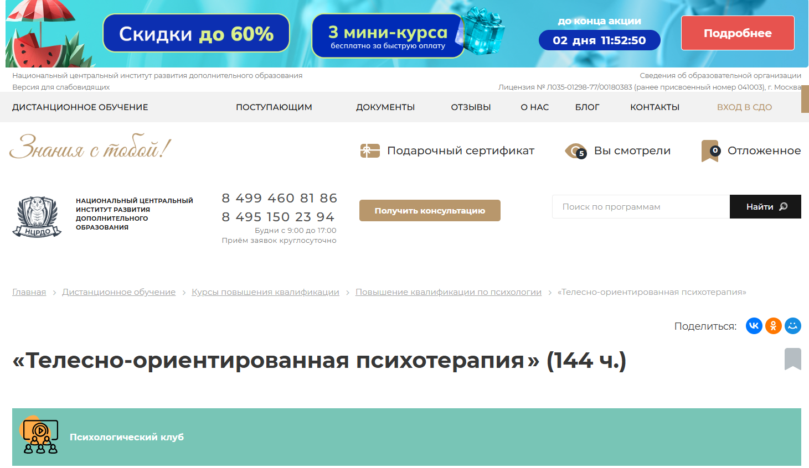
- ✅ Официальный сайт: ncrdo.ru
- 💸 Цена: 23 500 ₽ (по акции — 17 300 ₽)
- 💳 Рассрочка: 1 442 ₽/мес на 12 месяцев без переплат
- 📚 Формат: дистанционное обучение, видеолекции, вебинары, домашние задания, тесты, методички, библиотека вебинаров
- ⏳ Продолжительность: 2 месяца (144 академических часа)
- 📜 Документ: удостоверение о повышении квалификации установленного образца
- 📝 Трудоустройство: HR-консультации и помощь выпускникам в трудоустройстве
- 🔷 Для кого подходит курс: для практикующих психологов, студентов профильных вузов, специалистов в сфере психологии и психотерапии
Особенности:
Программа обучения по телесно-ориентированной терапии разработана специально под дистанционный формат, что делает её удобной для совмещения с работой или учебой. В курсе представлены как теоретические блоки, так и практические задания, ориентированные на реальные кейсы из работы телесных терапевтов. Доступ к курсу предоставляется навсегда, включая обновления материалов. Студенты работают по индивидуальному графику, проходят промежуточные тесты и итоговую аттестацию. При успешном прохождении обучения выдается удостоверение, данные которого вносятся в ФРДО. Программа аккредитована и подтверждена участием института в проекте «Сколково», что гарантирует качество обучения.
Чему учатся студенты:
- Применять методы телесно-ориентированной психотерапии на практике
- Диагностировать личностные нарушения и базовые расстройства
- Проводить индивидуальные и групповые сессии с клиентами
- Использовать дыхательные, двигательные и релаксационные техники
- Разрабатывать тактики телесной терапии и анализировать результаты
- Понимать структуру личности в норме и при отклонениях
- Владеть навыками консультирования в дистанционном формате
Преподаватели:
- Мельникова Елена Васильевна — опыт с 2010 года
- Тышкевич Марина Юрьевна — опыт с 2006 года
- Шевченко Дария Игоревна — опыт с 2018 года
- Салихова Мария Романовна — опыт с 2007 года
Преимущества:
- Обучение проводится полностью онлайн с доступом 24/7
- Гибкий график обучения, подходящий для работающих специалистов
- Доступ к платформе, библиотеке и вебинарам остается навсегда
- Выдается удостоверение установленного образца, вносимое в ФРДО
- Участие преподавателей с многолетним практическим опытом
- Доступны консультации с преподавателями и онлайн-поддержка
- Простая и честная рассрочка без скрытых платежей
- Возможность возврата 13% стоимости обучения через налоговый вычет
Отзывы учеников:
Слушатели высоко оценивают удобный дистанционный формат, качество лекционного материала и практическую направленность курса. Особенно часто хвалят поддержку преподавателей, доступность информации и возможность совмещать обучение с работой. Многие отмечают улучшение навыков консультирования и уверенности в ведении личной терапии.
Перейти на официальный сайт курса20. Методы телесно-ориентированной психотерапии телесные в работе психолога — Учебный центр «НЦПО»
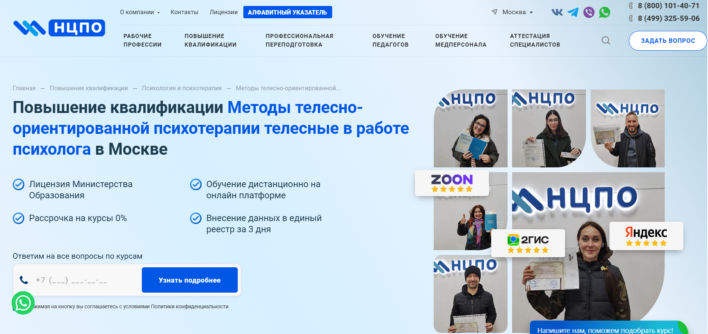
- ✅ Официальный сайт: ncpo.ru
- 💸 Цена обучения: от 10 800 ₽ (скидка 2 500 ₽ при оплате в день заявки)
- 💳 Рассрочка: 0% от 900 ₽ в месяц
- 📚 Формат: дистанционное обучение с доступом 24/7, видеолекции, методические материалы, тестирование, практические задания
- ⏳ Продолжительность: от 72 до 144 ак. часов
- 📜 Документ: удостоверение о повышении квалификации, внесение в реестр ФРДО
- 📝 Трудоустройство: курс помогает подтвердить квалификацию и получить допуск к профессиональной деятельности
- 🔷 Для кого подходит курс: психологам с профильным образованием, специалистам, работающим в консультировании и телесной терапии
Особенности:
Курс разработан для тех, кто хочет освоить методы телесно-ориентированной терапии в дистанционном формате. Программа отвечает требованиям Минобрнауки и позволяет проходить обучение в удобном ритме без отрыва от работы. После прохождения курсов студенты получают документы государственного образца. Обучение сопровождается методическими материалами и включает практическое закрепление навыков. Все данные слушателей вносятся в федеральный реестр. Учебный центр работает по официальной лицензии, что гарантирует юридическую защиту и признание документов. Учебный кабинет доступен круглосуточно. Удостоверение выдается уже на следующий день после окончания обучения.
Чему учатся студенты:
- Применению телесно-ориентированных техник в консультировании
- Работе с психосоматическими симптомами
- Выстраиванию границ в личной и групповой терапии
- Навыкам работы с телесными проявлениями эмоций
- Пониманию телесной динамики клиента
Преподаватели:
- Терешков Александр Леонидович — генеральный директор, практикующий специалист, руководитель центра
- Грезнева Диана — преподаватель, специалист в сфере психотерапевтических практик
- Малкова Анна — преподаватель, опыт работы в телесной терапии и консультировании
Преимущества:
- Дистанционное обучение с бессрочным доступом
- Работа по официальному договору с гарантией получения документов
- Возможность срочного получения удостоверения за 1 день
- Внесение данных в ФИС ФРДО за 3 дня
- Доступные цены и беспроцентная рассрочка
- Курс доступен из любого города и в любое время
- Программа учитывает запросы профессиональных психологов и консультантов
- Подходит для личной терапии и профессионального роста
Отзывы учеников:
Слушатели чаще всего отмечают высокое качество дистанционного формата, доступный и понятный материал, оперативную выдачу удостоверения и грамотную поддержку со стороны менеджеров. Также среди плюсов — возможность совмещать обучение с работой и гибкий график.
Перейти на официальный сайт курсаКто такой телесно-ориентированный психотерапевт?
Телесно-ориентированный психотерапевт — это специалист в области психотерапии, который работает с психоэмоциональными проблемами через тело. В основе метода лежит понимание, что психологическое состояние человека тесно связано с физическим состоянием его тела.
Такая терапия сочетает в себе элементы психологии, физиологии, телесной осознанности и дыхательных практик. Цель — помочь клиенту справиться с внутренними конфликтами, стрессом и травмами, «растворяя» их телесные зажимы и блоки.
Что делают телесно-ориентированные терапевты и чем занимаются?
Основная задача телесно-ориентированного терапевта — помочь клиенту «услышать» свое тело и устранить психосоматические зажимы.
- Проводят индивидуальные и групповые сеансы, направленные на восстановление телесно-психического баланса.
- Работают с травмами детства, стрессами, хроническим напряжением и депрессией через телесные практики.
- Используют дыхательные упражнения, движения, массажные техники и методы расслабления.
- Помогают клиентам научиться чувствовать свои эмоции и выражать их экологично.
- Создают безопасную среду для глубокой психоэмоциональной трансформации.
Телесно-ориентированный терапевт не просто помогает расслабиться — он помогает человеку изменить отношение к себе и своему телу, обрести целостность и внутреннюю устойчивость.
Что должен знать и уметь телесно-ориентированный терапевт?
Этот специалист должен обладать обширными знаниями как в области психологии, так и в телесных практиках.
- Понимание анатомии, физиологии и психосоматики.
- Навыки диагностики психоэмоционального состояния по телесным проявлениям.
- Знание телесно-ориентированных методов: биоэнергетика, соматика, ребефинг, гештальт-терапия с телесным уклоном.
- Эмпатия, чувствительность и умение выстраивать доверительный контакт с клиентом.
- Умение создавать безопасное терапевтическое пространство для телесной работы.
Кроме профессиональных знаний, терапевт должен работать над собой — проходить личную терапию, развивать телесную осознанность и непрерывно повышать квалификацию.
Востребованность и зарплаты телесно-ориентированных психотерапевтов в России в 2025 году
С каждым годом интерес к телесным практикам растет. В 2025 году телесно-ориентированная терапия активно входит в частную практику и корпоративную психологию.
- Высокий спрос наблюдается в крупных городах: Москва, Санкт-Петербург, Казань, Екатеринбург.
- Терапевтов приглашают в центры здоровья, SPA-комплексы, йога-студии, клиники психосоматической медицины.
- Все больше специалистов ведут частную практику онлайн, что расширяет географию их клиентов.
Средний доход телесно-ориентированного терапевта в России в 2025 году составляет от 60 000 до 150 000 рублей в месяц, в зависимости от уровня квалификации и количества клиентов. Опытные специалисты с устоявшейся практикой могут зарабатывать до 250 000 рублей в месяц.
Как стать телесно-ориентированным психотерапевтом и где учиться?
Чтобы стать телесно-ориентированным терапевтом, нужно пройти специализированное обучение и иметь психологическую базу.
- Получить базовое образование в области психологии (вуз или профильные курсы).
- Пройти обучение в одной из школ телесно-ориентированной терапии.
- Пройти личную терапию (обязательное условие).
- Собрать портфолио практики и пройти супервизию у опытного специалиста.
- Получить сертификат, дающий право на практику (обычно после 2-3 лет обучения).
Также важно постоянно развиваться: посещать мастер-классы, международные конференции, проходить повышения квалификации в смежных телесных направлениях.
Какие методы применяются в телесной терапии?
Телесно-ориентированная терапия объединяет множество методик, которые направлены на глубокую работу с телом и психикой.
- Биоэнергетика Александера Лоуэна — работа с мышечными блоками и энергетикой тела.
- Танцевально-двигательная терапия — проработка эмоций через спонтанное движение и ритм.
- Ребефинг и холотропное дыхание — трансформационные дыхательные практики.
- Соматический опыт (Somatic Experiencing) — работа с последствиями травм и стрессов.
- Фокусировка — развитие способности осознавать и слушать сигналы тела.
Выбор методик зависит от подготовки терапевта и запроса клиента. Часто специалисты комбинируют несколько подходов для более глубокого и эффективного результата.
Кому показана телесно-ориентированная терапия?
Телесно-ориентированная терапия подходит не только тем, кто сталкивается с депрессией или тревожностью. Она эффективна в самых разных случаях:
- Хроническая усталость и выгорание.
- Психосоматические боли: головные, мышечные, желудочные.
- Травмы, ПТСР, детские обиды и подавленные эмоции.
- Нарушения сна, панические атаки, тревожность.
- Проблемы с принятием тела, сексуальностью и границами.
Регулярные телесные практики помогают вернуть себе энергию, восстановить контакт с собой и улучшить качество жизни.
Что такое телесно-ориентированная терапия и в чем ее суть?
Телесно-ориентированная терапия — это направление психотерапии, основанное на работе с телесными проявлениями эмоций и переживаний. Она помогает выявить психосоматические причины проблем, восстановить контакт с телом и улучшить эмоциональное состояние. Основу методики составляют техники телесно-ориентированной терапии, которые применяются в рамках индивидуального консультирования и групповой терапии.
Какие методы телесно-ориентированной психотерапии используются в обучении?
Ключевые методы телесно-ориентированной психотерапии включают дыхательные техники, телесные упражнения, работу с мышечными зажимами, соматическую осознанность, а также психологическое консультирование через телесный контакт. Эти методы активно применяются на практических занятиях в рамках дистанционных курсов и очных форматов.
Можно ли пройти обучение дистанционно?
Да, дистанционный формат обучения стал удобным форматом для многих слушателей. Дистанционное обучение позволяет изучать программы профессиональной переподготовки с гибким графиком, не отрываясь от работы. Студенты получают доступ к учебным материалам, видеоурокам, заданиям и поддержке преподавателей онлайн.
Какие форматы обучения телесной терапии доступны?
Существуют различные форматы обучения: дистанционные образовательные программы, очные курсы, комбинированные форматы (blended learning). Это позволяет выбрать любым удобным форматом прохождение обучения в соответствии с индивидуальными потребностями и занятостью.
Кому подойдет обучение ТОП?
Обучение предназначено для практикующих психологов, студентов последних курсов психологических факультетов, психотерапевтов и специалистов, прошедших профессиональную переподготовку в смежных областях. Также оно будет полезно тем, кто желает освоить новые методы консультирования и расширить спектр оказываемой помощи клиентам.
Как проходит процесс обучения телесно-ориентированной психотерапии?
Процесс обучения включает теоретические модули, практические задания, участие в супервизиях и групповой терапии. Также предусмотрены блоки личной терапии, что позволяет студентам прожить методы на собственном опыте. Это помогает лучше понять техники телесно-ориентированной терапии и навыки консультирования.
Что получают выпускники после окончания курса обучения?
После окончания курса слушатели получают удостоверение установленного образца или диплом о профессиональной переподготовке. Документы позволяют применять полученные знания в психологическом консультировании и телесно-ориентированной терапии в рамках профессиональной деятельности.
Какие темы изучаются в курсе телесно-ориентированной психотерапии?
Учебные программы охватывают направления психотерапии, основы телесной терапии, психосоматический подход, практику телесных контактов, диагностику психосоматических проявлений, методы саморегуляции и релаксации, техники телесно-ориентированной терапии, а также психологическое консультирование.
Какие преимущества дает телесно-ориентированная терапия в работе с клиентами?
Методы телесной терапии помогают психологу глубже понимать эмоциональные проблемы клиента, работать с телом, расслаблять мышечные блоки, усиливать телесную осознанность и восстанавливать психологическое равновесие. Это особенно эффективно при работе с травмами, психосоматикой и стрессом.
Можно ли совмещать обучение с работой?
Да, обучение позволяет совмещать с профессиональной деятельностью. Благодаря индивидуальному графику обучения и дистанционному формату, слушатели могут проходить курс в удобное время. График обучения разрабатывается с учетом занятости студента.
Сколько времени занимает прохождение курсов ?
Сроки обучения зависят от выбранной программы: программы профессиональной переподготовки длятся от 6 до 12 месяцев, курсы повышения квалификации — от 2 недель до 3 месяцев. Возможен индивидуальный подход по срокам, особенно в дистанционном обучении.
Какие документы выдаются по итогам обучения?
После окончания обучения институт психотерапии выдает удостоверение или диплом установленного образца, который вносится в ФРДО. Выпускники получают право использовать методы телесно-ориентированной терапии в рамках психологического консультирования.
Какие учебные материалы доступны в дистанционных курсах по телесной терапии?
Слушатели получают доступ к учебным материалам, видеолекциям, презентациям, заданиям, супервизиям, а также практическим упражнениям. Дистанционные образовательные программы обеспечивают полноценное освоение телесной психотерапии с обратной связью от преподавателей.
Какие навыки получит слушатель после прохождения обучения?
Слушатель получает практический навык работы с телом клиента, освоит методы телесно-ориентированной терапии, научится проводить индивидуальное консультирование и групповую терапию, работать с психосоматикой и телесными реакциями, помогать клиенту справляться с травмами и эмоциональными блоками.
Можно ли использовать полученные знания в профессиональной практике?
Да, после прохождения курсов и получения диплома, специалист может применять методы телесно-ориентированной психотерапии в своей работе, расширяя арсенал практикующего психолога или психотерапевта. Это повышает квалификацию и позволяет более эффективно помогать клиентам.
Почему стоит пройти профессиональную переподготовку по телесно-ориентированной терапии?
Профессиональная переподготовка дает право вести психологическую практику с применением техник телесно-ориентированной терапии, расширяет профессиональные горизонты, укрепляет собственные ресурсы через личную терапию и делает возможной работу с клиентами на глубоком уровне.
------------------------------------------------
Реклама. Информация о рекламодателе по ссылкам в статье.